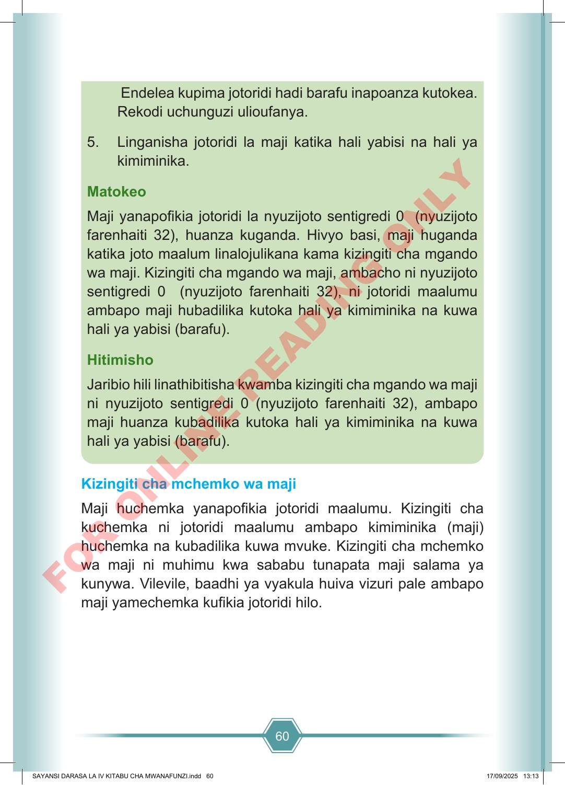

60 Endelea kupima jotoridi hadi barafu inapoanza kutokea. Rekodi uchunguzi ulioufanya. 5. Linganisha jotoridi la maji katika hali yabisi na hali ya kimiminika. Matokeo Maji yanapofikia jotoridi la nyuzijoto sentigredi 0 (nyuzijoto farenhaiti 32), huanza kuganda. Hivyo basi, maji huganda katika joto maalum linalojulikana kama kizingiti cha mgando wa maji. Kizingiti cha mgando wa maji, ambacho ni nyuzijoto sentigredi 0 (nyuzijoto farenhaiti 32), ni jotoridi maalumu ambapo maji hubadilika kutoka hali ya kimiminika na kuwa hali ya yabisi (barafu). Hitimisho Jaribio hili linathibitisha kwamba kizingiti cha mgando wa maji ni nyuzijoto sentigredi 0 (nyuzijoto farenhaiti 32), ambapo maji huanza kubadilika kutoka hali ya kimiminika na kuwa hali ya yabisi (barafu). Kizingiti cha mchemko wa maji Maji huchemka yanapofikia jotoridi maalumu. Kizingiti cha kuchemka ni jotoridi maalumu ambapo kimiminika (maji) huchemka na kubadilika kuwa mvuke. Kizingiti cha mchemko wa maji ni muhimu kwa sababu tunapata maji salama ya kunywa. Vilevile, baadhi ya vyakula huiva vizuri pale ambapo maji yamechemka kufikia jotoridi hilo. SAYANSI DARASA LA IV KITABU CHA MWANAFUNZI.indd 60 SAYANSI DARASA LA IV KITABU CHA MWANAFUNZI.indd 60 17/09/2025 13:13 17/09/2025 13:13 F O R O N L I N E R E A D I N G O N L Y